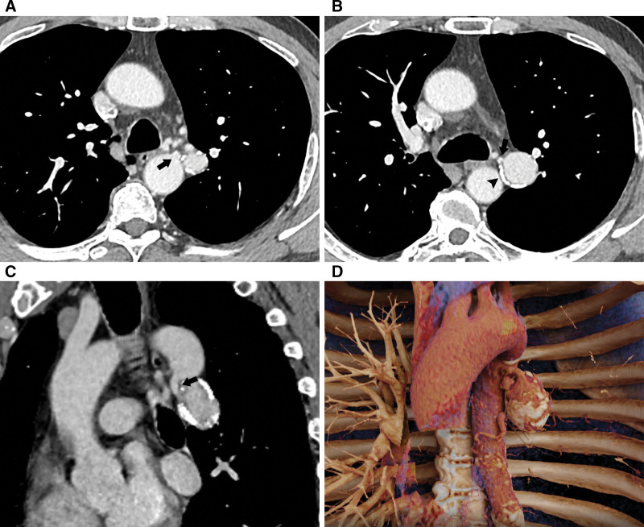
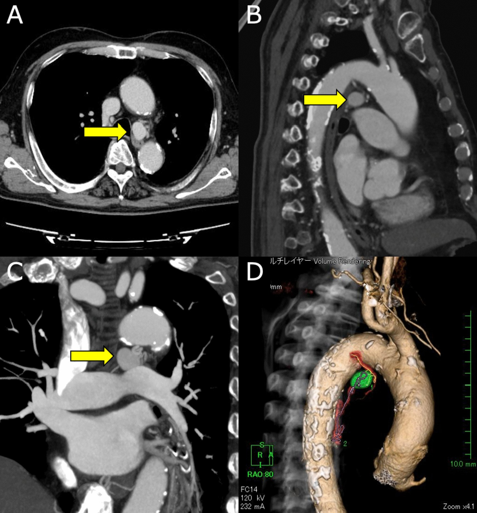
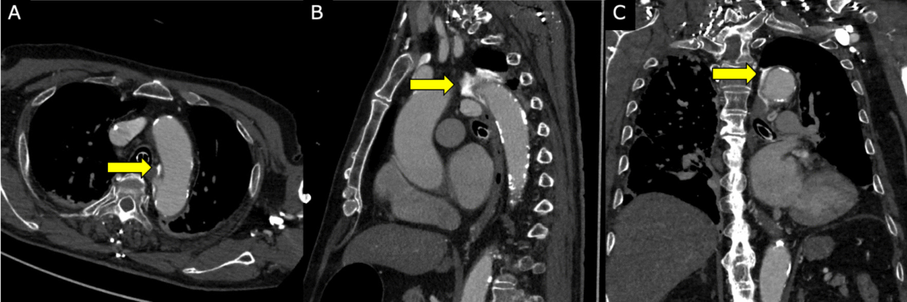

097 — Phình động mạch phế quản (BAA) & nút mạch trong ho ra máu / Bronchial artery aneurysm and embolization
Tags: pattern:phinh-mach pattern:ho-ra-mau vung:phoi vung:trung-that protocol:CTA-nguc protocol:DSA-nut-mach protocol:TEVAR
Mức chắc chắn (certainty): tổng hợp y văn (literature synthesis) — 1 loạt 5 bệnh nhân BAA được nút mạch (Fu LJ et al., Postepy Kardiol Interwencyjnej 2020, PMC7863811), 1 ca BAA khổng lồ bị chẩn đoán nhầm u trung thất kèm tổng quan y văn (Balar AB et al., Radiol Case Rep 2022, PMC8898754), 2 ca BAA trung thất lớn/cổ ngắn được can thiệp nội mạch (Wang J et al., Medicine 2026, PMC12826243; Higa H et al., Gen Thorac Cardiovasc Surg Cases 2023, PMC11533431), 1 ca BAA vỡ 9 mm được TEVAR (Kikutani K et al., Intern Med 2020, PMC7303459) và 1 ca BAA vỡ biểu hiện nôn máu (Kim G et al., Curr Med Imaging 2025, PMC13223448). Số chưa đối chiếu được ghi "chưa rõ", không bịa.
1. Tổng quan bệnh học – cơ chế hình ảnh
- Động mạch phế quản (bronchial artery) là mạch hệ thống, không phải mạch phổi. Nhánh điển hình xuất phát từ động mạch chủ xuống ngang T5–T6, nuôi phế quản, mô kẽ và màng phổi; áp lực ~100 mmHg so với 15–20 mmHg của động mạch phổi. Vì vậy khi túi phình vỡ, máu phun vào lòng phế quản và gây tử vong do ngạt (asphyxia), không phải do mất máu ồ ạt — ưu tiên số một là bảo vệ đường thở (bài 091).
- Vì sao BAA hiếm nhưng nguy hiểm: BAA gặp ở < 1% số ca chụp động mạch phế quản chọn lọc; đến 2020 y văn tiếng Anh mới ghi nhận khoảng 60 ca BAA và < 50 ca giả phình (pseudoaneurysm) (Fu LJ et al. 2020; Balar AB et al. 2022). Số ca ít khiến bác sĩ đọc hình không nghĩ tới, trong khi túi vỡ có thể tử vong nhanh.
- Bốn cơ chế làm thành mạch yếu và giãn ra:
- Tăng lưu lượng mạn: giãn phế quản, lao, viêm phổi tái diễn → mạch phì đại, xoắn, thành mỏng dần.
- Viêm – xơ hóa thành mạch: lao hoạt động, aspergilloma, viêm mủ kéo dài phá hủy lớp áo giữa.
- Xơ vữa (atherosclerosis): mảng xơ làm thành mất đàn hồi, thường thấy vôi hóa hình vòng quanh túi.
- Bẩm sinh / dị tật: sequenstration phổi, bất thường phát sinh mạch; BAA có thể kèm rò phế quản–động mạch phổi.
- TẠI SAO túi càng lớn càng dễ vỡ — định luật Laplace: sức căng thành T ∝ P × r / độ dày thành. Túi phình có bán kính (r) tăng, áp lực (P) hệ thống cao, còn thành mỏng gần như không có cơ trơn → chỉ cần tăng nhẹ đường kính hoặc một cơn tăng huyết áp là đủ vượt giới hạn mô. Đây là lý do không có ngưỡng kích thước "an toàn": ca vỡ nhỏ nhất trong loạt TEVAR chỉ 9 mm, trong khi ca BAA 4,2 × 5,5 × 6,7 cm lại được theo dõi nhầm 2 năm vì tưởng u trung thất (Kikutani K et al. 2020; Balar AB et al. 2022).
- Vì sao CTA có thể âm tính giả: túi nằm sát phế quản/trung thất, dòng chảy xoáy và huyết khối lót thành làm thuốc không đầy hoàn toàn. Trong tổng quan của Balar AB et al. 2022, độ nhạy của CTA là 67%, còn DSA là 100% — CTA âm tính không loại trừ BAA nếu lâm sàng nghi cao.
- Hình ảnh đặc trưng trên CTA lát mỏng: túi cản quang nối liền với một nhánh động mạch phế quản (mạch nuôi đi từ động mạch chủ xuống), vôi hóa hình vòng quanh túi, có thể có huyết khối lót thành; túi trung thất nằm cạnh phế quản gốc/thực quản, túi trong phổi nằm cạnh phế quản thùy. Kích thước ghi nhận trong các ca: 9 mm (vỡ), 21 × 17 × 17 mm (trung thất, động mạch vào 2,5 mm), 4,2 × 5,5 × 6,7 cm (khổng lồ, chẩn đoán nhầm) (Kikutani 2020; Higa 2023; Balar 2022).
2. Mẫu hình + chẩn đoán phân biệt theo vị trí (gamut)
Câu hỏi thực hành: túi cản quang nằm ở đâu, và mạch nuôi đến từ đâu? Vị trí quyết định triệu chứng và đường can thiệp.
- BAA trung thất (mediastinal BAA): thường không triệu chứng, phát hiện tình cờ; khi lớn gây nuốt nghẹn, khàn tiếng, ho do chèn ép; khi vỡ gây máu tụ trung thất, tràn máu màng phổi, bệnh cảnh giống bóc tách động mạch chủ (đau ngực–lưng, sốc).
- BAA trong phổi/rốn phổi (intrapulmonary/hilar BAA): hay gặp ho ra máu, có thể ồ ạt; túi nằm trong nhu mô hoặc sát rốn, dễ nhầm với phình giả Rasmussen hoặc phình động mạch phổi.
- BAA nhiều túi / hai bên: nghĩ bệnh nền lan tỏa — giãn phế quản, lao, sequenstration, hoặc bệnh mô liên kết/viêm mạch.
- Gamut theo cơ chế: tăng lưu lượng (giãn phế quản, lao, tim bẩm sinh), viêm/nhiễm (lao, aspergillus, áp-xe), thoái hóa–xơ vữa, chấn thương/iatrogenic (đặt catheter, phẫu thuật), bẩm sinh (sequenstration).
Mnemonic "BAA" — 4 nhóm phải loại trừ trước khi gọi là BAA:
- B — Bleeding source khác: phình giả Rasmussen/động mạch phổi (bài 094), phình thật động mạch phổi (bài 096), phình/bóc tách động mạch chủ.
- A — Aortic / esophageal lesion: túi phình chủ, loét xuyên thành (PAU), u thực quản dưới niêm mạc.
- A — Adenopathy / mass: hạch trung thất, u trung thất, u phổi — đặc biệt trên CT không cản quang.
3. Bảng so sánh phân biệt (ma trận đối chiếu)
| Thực thể (entity) | Hình ảnh điển hình (CTA lát mỏng) | Chốt vào (rule-in) | Chốt loại (rule-out) | Gợi ý xác nhận |
|---|---|---|---|---|
| BAA (phình động mạch phế quản) | Túi cản quang cạnh phế quản/trung thất, vôi hóa hình vòng, mạch nuôi từ động mạch chủ xuống T5–T6 | Thấy cổ túi nối trực tiếp với nhánh động mạch phế quản; mạch nuôi hệ thống | Không có mạch nuôi hệ thống; túi nối với động mạch phổi → nghĩ Rasmussen/PA | CTA ≤ 1 mm + MIP/3D; DSA chọn lọc (nhạy 100%) |
| Phình giả Rasmussen / phình giả động mạch phổi | Túi trong hoặc sát hang lao, nối nhánh động mạch phổi; thường có hang ≥ 30 mm | Túi nối nhánh động mạch phổi, trong hang lao, ho ra máu | Mạch nuôi từ động mạch chủ/ĐM phế quản → BAA | CTA phổi + chụp động mạch phổi; 28,6% không thấy trên chụp ĐM phổi → chụp hệ thống |
| Phình thật động mạch phổi | Giãn thân/nhánh ĐM phổi, thành còn 3 lớp, có thể huyết khối lót thành | Đường kính > 45 mm (chưa gọi phình dưới ngưỡng); > 55 mm hoặc tăng > 5 mm/6 tháng = can thiệp | Túi có cổ hẹp nối mạch hệ thống → BAA/giả phình | CTPA + MIP; đo đường kính và tốc độ lớn |
| Phình/bóc tách động mạch chủ, PAU | Túi/loét liên tục với lòng ĐMC, vôi hóa di lệch, flap, máu tụ trung thất | Liên tục với lòng ĐMC; flap/2 lòng; PAU có ổ loét xuyên thành | Có cổ riêng nối nhánh phế quản, ĐMC nguyên → BAA | CTA toàn ngực thì động mạch; TEE nếu cấp |
| Hạch trung thất / u trung thất | Khối mô mềm, ngấm thuốc ít–trung bình, không có mạch nuôi hệ thống; có thể vôi hóa dạng điểm | Không có cổ túi, không có mạch nuôi từ ĐMC; hình dạng ổn định nhiều tháng | Ngấm thuốc bằng lòng ĐMC + vôi hóa vòng + mạch nuôi = BAA | So phim cũ; PET/CT (BAA có thể không tăng FDG, dễ bị gọi u) |
| U phế quản ưa mạch (carcinoid) | Khối trong lòng phế quản, ngấm mạnh, có thể ho ra máu; không có túi phình | Khối lấp lòng phế quản + ngấm mạnh thì động mạch | Có túi cản quang hình cầu + cổ = BAA | Nội soi phế quản + sinh thiết; CTA |
| U/thoát vị thực quản dưới niêm mạc | Khối trong thành thực quản, không có mạch nuôi hệ thống; nuốt nghẹn | Khối thành thực quản, không đập theo mạch trên nội soi | Có mạch nuôi từ ĐMC + vôi hóa vòng = BAA | Nội soi + EUS; CTA |

BAA lớn ở rốn phổi trái, xuất phát từ động mạch chủ ngực: (A) trục ngang — túi cạnh phế quản gốc (mũi tên đen); (B) vôi hóa hình vòng quanh túi (đầu mũi tên) và cổ túi hẹp; (C) coronal chếch — cổ túi ngắn, hình phễu; (D) 3D-VR — tương quan túi với ĐMC và mạch nuôi. Nguồn: Wang J et al., Medicine 2026, PMC12826243 Fig. 1, CC BY 4.0.Đọc CTA tìm BAA theo 5 bước (tránh bỏ sót)
- Tìm mạch nuôi: lần theo nhánh xuất phát từ động mạch chủ xuống T5–T6 (hoặc nhánh ectopic từ cung ĐMC/thân sườn–phế quản); mạch phì đại khi > 2 mm.
- Đo túi: đường kính lớn nhất, chiều dài cổ túi, đường kính và chiều dài đoạn động mạch vào — đây là ba số quyết định chọn coil/plug/stent-graft.
- Tìm vôi hóa hình vòng và huyết khối lót thành (giảm đậm độ trong túi) — huyết khối không loại trừ BAA.
- Tìm rò động mạch phế quản – động mạch phổi (outflow): nếu có, phải nút cả đầu vào và đầu ra, nếu không sẽ tái thông qua tuần hoàn phổi.
- Nếu CTA âm tính mà nghi cao: chuyển DSA chọn lọc — CTA chỉ nhạy 67%, DSA 100%.
4. Protocol chụp + phân tầng & quyết định can thiệp
Protocol
- CTA ngực: lát ≤ 1 mm, thì động mạch (bolus tracking ở ĐMC xuống), tái tạo MIP + 3D-VR; đo túi/cổ/mạch vào trên workstation. Nếu túi ở rốn phổi, bổ sung thì muộn 30–40 giây để phân biệt huyết khối lót thành với thuốc đầy túi.
- DSA: chụp động mạch phế quản chọn lọc (5F Cobra/MPA), test injection trước khi nút; bắt buộc tìm nhánh tủy sống (radiculomedullary branch) trước khi bơm hạt/keo.
- Đo áp lực nếu có rò động mạch phổi hoặc nghi tăng áp phổi; ghi lại để so sau can thiệp.
Phân tầng và thuật toán
- Nguyên tắc cốt lõi: mọi BAA đều nên được điều trị, kể cả khi không triệu chứng, vì vỡ là biến cố chết người và không có ngưỡng kích thước an toàn (Higa H et al. 2023). Khác với phình động mạch phổi thật (bài 096) — nơi có ngưỡng 45/55 mm — BAA không chờ "đủ lớn".
- Nội mạch là lựa chọn đầu tay cho BAA không triệu chứng, đặc biệt thể trung thất; mổ cắt túi/buộc động mạch vào dành cho: vỡ mất kiểm soát, giải phẫu không tiếp cận được, nút mạch thất bại hoặc tái thông.
- Chọn vật liệu theo hình thái cổ túi:
- Cổ hẹp, mạch vào dài → coil ± PVA/gelatin; có thể "sandwich" (nút đầu vào và đầu ra).
- Cổ rộng, ngắn, xoắn → Amplatzer vascular plug (AVP) hoặc NBCA–lipiodol; ca cổ ngắn 8 × 7 mm đã dùng một AVP, 6 tháng không tái phát (Wang J et al. 2026).
- Túi sát ĐMC, cổ rất rộng/không có cổ → stent-graft phủ (TEVAR) để loại túi khỏi dòng máu, đặc biệt khi BAA xuất phát từ cung ĐMC (Kikutani 2020; Higa 2023).
- Sau can thiệp: CTA 1 tháng, 6 tháng, 12 tháng, sau đó mỗi năm; mục tiêu là không còn thuốc trong túi và đường kính túi giảm dần (ca Higa: 21 mm → 5,6 mm sau 6 tháng).
flowchart TD
A[BAA trên CTA hoặc DSA] --> B{Vỡ hoặc sốc?}
B -->|Có| C[Bảo vệ đường thở và hồi sức]
C --> D[Stent-graft TEVAR hoặc mổ cấp]
B -->|Không| E{Cổ túi và mạch vào tiếp cận được?}
E -->|Có| F[Nút mạch coil PVA NBCA hoặc AVP]
E -->|Không| G[Stent-graft phủ cổ hoặc mổ buộc mạch vào]
F --> H[CTA 1 6 12 tháng]
G --> H
Biến chứng của nút mạch — phải nói trước với bệnh nhân
- Thiếu máu tủy sống (spinal cord ischemia): nhánh phế quản có thể cho nhánh tủy sống; nút nhầm hoặc bơm hạt trôi ngược gây liệt hai chi dưới, không hồi phục. Đây là biến chứng thảm khốc nhất, dù hiếm.
- Bóc tách động mạch chủ do catheter: ca Higa 2023 — BAE gây bóc tách cấp cục bộ từ lỗ động mạch phế quản tới cung ĐMC, phải TEVAR cấp cứu; vì vậy cần sẵn sàng phương án TEVAR/mổ khi nút BAA trung thất.
- Tái thông (recanalization) và tuần hoàn bàng hệ: nút không hoàn toàn hoặc bỏ sót nhánh bàng hệ → túi tái đầy; theo dõi CTA và chụp lại nếu còn ho ra máu.
- Coil migration / huyết khối mạch đích: kiểm tra bằng fluoroscopy cuối thủ thuật; CT sau nút có artifact kim loại — dùng spectral CT để giảm artifact và đánh giá túi (Zhang S et al. 2026, PMC13380537).
5. Biến thể bình thường và cạm bẫy
- Cạm bẫy số 1 — CT không cản quang: BAA trung thất trông như hạch hoặc khối mô mềm; ca 4,2 × 5,5 × 6,7 cm đã bị gọi là "u trung thất" và theo dõi 2 năm trước khi chẩn đoán đúng (Balar AB et al. 2022). Trên CT không cản quang, không thể loại trừ BAA — nếu khối nằm cạnh phế quản gốc/ĐMC xuống, phải chụp CTA.
- Cạm bẫy số 2 — CTA âm tính: độ nhạy 67% (Balar 2022). Túi huyết khối hoàn toàn hoặc dòng chảy cạnh tranh có thể không đầy thuốc; nếu bệnh nhân ho ra máu tái diễn và không tìm được nguồn, chụp DSA hệ thống.
- Cạm bẫy số 3 — vỡ vào thực quản: BAA vỡ có thể biểu hiện nôn máu (hematemesis) thay vì ho ra máu, do túi nằm sát thực quản và rò vào lòng thực quản; ca Kim G et al. 2025 phải nút 2 lần vì còn thoát thuốc (PMC13223448). Nôn máu + đau ngực/đau lưng ở người có bệnh phổi mạn → nghĩ BAA vỡ, không chỉ loét dạ dày.
- Cạm bẫy số 4 — "khối trung thất tăng FDG" không loại trừ BAA: viêm thành mạch có thể tăng nhẹ FDG; PET/CT không đủ để phân biệt BAA với u, phải có CTA thì động mạch.
- Cạm bẫy số 5 — bỏ sót rò động mạch phổi: nếu chỉ nút đầu vào mà còn rò sang động mạch phổi, túi vẫn đầy qua đường phổi; luôn tìm outflow trên CTA/DSA trước khi kết thúc thủ thuật.
- Biến thể bình thường: động mạch phế quản phì đại > 2 mm nhưng không có túi trong giãn phế quản/lao — đây là "mạch nuôi tăng sinh", không phải BAA; chỉ can thiệp khi có ho ra máu và túi/nguồn chảy xác định.
6. Tự lượng giá — Blind Quiz
Ca 1 — Nam 69 tuổi, tình cờ phát hiện khối cạnh rốn phổi trái khi khám sức khỏe. Không ho ra máu.
- Hỏi: khối nằm ở đâu? Có dấu hiệu nào chứng minh đây là mạch máu chứ không phải hạch? Ba chẩn đoán phân biệt?
Bấm để hiện đáp án (findings + chẩn đoán)
- Findings: túi cản quang lớn ở rốn phổi trái, nối với động mạch chủ ngực qua một nhánh động mạch phế quản; vôi hóa hình vòng quanh túi; cổ túi ngắn, hình phễu; 3D-VR thấy rõ mạch nuôi.
- Chẩn đoán: BAA (phình động mạch phế quản) — vôi hóa vòng + mạch nuôi hệ thống là chốt.
- Phân biệt: phình giả Rasmussen (nối nhánh động mạch phổi, trong hang lao), phình thật động mạch phổi (thân/nhánh ĐM phổi, > 45 mm), hạch trung thất (không có mạch nuôi, không vôi hóa vòng).
- Xử trí: nút mạch bằng AVP 8 × 7 mm; CTA 6 tháng không tái phát (Wang J et al. 2026).
- Nguồn ảnh: Wang J et al., Medicine 2026, PMC12826243 Fig. 1, CC BY 4.0.
Ca 2 — Nữ 79 tuổi, đau ngực–lưng dữ dội, tụt huyết áp. CTA thấy túi 9 mm cạnh cung ĐMC.

- Hỏi: túi xuất phát từ đâu? Vì sao bệnh cảnh giống bóc tách ĐMC? Ngưỡng can thiệp có phụ thuộc kích thước không?
Bấm để hiện đáp án (findings + chẩn đoán)
- Findings: túi 21 × 17 × 17 mm phía sau trung thất của cung ĐMC xa, động mạch vào 2,5 mm; 3D thấy túi (xanh) và mạch vào (đỏ).
- Chẩn đoán: BAA trung thất; vỡ gây máu tụ trung thất và bệnh cảnh giống bóc tách động mạch chủ (đau ngực–lưng, sốc).
- Điểm cốt lõi: không có ngưỡng kích thước an toàn — ca vỡ khác chỉ 9 mm (Kikutani 2020); mọi BAA nên được điều trị (Higa 2023).
- Xử trí: ưu tiên nội mạch; ca này BAE gây bóc tách ĐMC cấp, phải TEVAR; 6 tháng túi còn 5,6 mm, không endoleak.
- Nguồn ảnh: Higa H et al., Gen Thorac Cardiovasc Surg Cases 2023, PMC11533431 Fig. 1, CC BY 4.0.
Ca 3 — Sau nút mạch BAA trung thất 1 giờ, bệnh nhân đau ngực dữ dội trở lại. CTA kiểm tra:

- Hỏi: hình mũi tên vàng chỉ gì? Đây là biến chứng gì của thủ thuật? Xử trí?
Bấm để hiện đáp án (findings + chẩn đoán)
- Findings: lóc nội mạc cục bộ (localized dissection) với lỗ vào giả 1–5 mm, chạy từ lỗ động mạch phế quản tới cung ĐMC xa; thuốc tràn vào giả lòng.
- Chẩn đoán: bóc tách động mạch chủ do catheter trong BAE — biến chứng iatrogenic của chính thủ thuật.
- Xử trí: TEVAR cấp cứu từ ngoại vi động mạch dưới đòn trái tới T7; 6 tháng không endoleak, túi BAA giảm còn 5,6 mm.
- Bài học: với BAA trung thất sát cung ĐMC, phải chuẩn bị sẵn phương án TEVAR/mổ trước khi nút.
- Nguồn ảnh: Higa H et al., Gen Thorac Cardiovasc Surg Cases 2023, PMC11533431 Fig. 3, CC BY 4.0.
Bài liên quan chéo
- 001 – Tổng quan hệ Ngực
- 091 – Ho ra máu ồ ạt & nút mạch động mạch phế quản (nguồn chảy hệ thống, NBSA, nhồi máu tủy)
- 094 – Ho ra máu từ động mạch phổi: Rasmussen & nút mạch phổi (phình giả trong hang lao)
- 096 – Phình động mạch phổi thật & Hughes–Stovin (ngưỡng 45/55 mm — khác BAA)
- 093 – Hội chứng tĩnh mạch chủ trên (khối trung thất, stent tĩnh mạch)
- 098 – Barotrauma & tràn khí màng phổi áp lực (biến chứng đường thở)
Ảnh
- Tên file:
097_baa_<Modality>_PMC<ID>-Fig<N>-<License>.jpg(vd097_baa_CT_PMC12826243-Fig1-CCBY.jpg); nguồn + giấy phép từng ảnh trongimages/CREDITS.md. - Cả 4 ảnh trong bài là CC BY 4.0 → được tải và chú thích; không crop, không kéo giãn.
Không dùng để chẩn đoán độc lập khi chưa có người hướng dẫn.